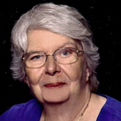

6.2 Expérience de mort imminente négative
Y a-t-il des personnes qui ont vécu une expérience de mort imminente négative, proche de l’image classique de l’enfer ?
Oui. Bien que les récits positifs soient largement majoritaires, il existe des témoignages bouleversants d’EMI dites « négatives », évoquant des sensations d’angoisse, d’isolement, voire de damnation. Le livre La vie après la mort – Pourquoi il faut y croire en parle brièvement, citant plusieurs études (Greyson, Bush, Moody).
Les auteurs (Chambon et Riffard) rappellent que :
- Ces expériences sont très minoritaires (1 à 5 % des cas selon les sources).
- Elles sont moins souvent partagées car honteuses, traumatisantes ou incomprises.
- Elles ne doivent pas être interprétées comme des punitions mais comme des reflets de l’état psychique au moment du décès (peur, résistance, confusion).
- Parfois, ces EMI commencent par l’obscurité mais évoluent vers la lumière après un lâcher-prise.
Elles pourraient être comprises non comme des échecs spirituels, mais comme des étapes initiatiques : des appels à la transformation intérieure.
Pour mieux les comprendre, voici deux témoignages représentatifs : celui de Nancy Evans Bush (le vide) et celui de Howard Storm (l’enfer).
Nancy Evans Bush : le vide existentiel #
Dans les années 1960, Nancy Evans Bush, jeune chrétienne sans antécédents médicaux graves, subit une EMI sous anesthésie. Contrairement aux récits lumineux, elle fait l’expérience d’un vide absolu : plus d’identité, plus de Dieu, plus de repères. Un néant froid, sans fin.
“J’étais dans le vide. Et j’étais… rien. Oubliée, inexistante.”
Elle décrit un anéantissement total, ni feu ni démons, mais une absence radicale de tout. Cette expérience la hante pendant des années. Pendant plus de 20 ans, elle n’en parle à personne, craignant d’être perçue comme folle ou isolée.

Ce n’est que bien plus tard, en découvrant les travaux de Raymond Moody et de la IANDS (International Association for Near-Death Studies), qu’elle comprend qu’elle n’est pas seule. Elle découvre que d’autres personnes ont aussi vécu des EMI « sombres », et elle décide alors de mener ses propres recherches.
Avec le soutien du Dr Bruce Greyson, elle explore ces récits minoritaires et devient la voix de ceux qu’on n’avait jamais écoutés : les témoins d’EMI négatives.
Leurs profils sont souvent loin des clichés :
- certaines sont des personnes morales, croyantes ou bienveillantes ;
- d’autres sont très rationnelles, attachées au contrôle ou traversent une crise intérieure inconsciente.
Ce que ces personnes ont en commun semble être une forme de déconnexion intérieure : peur du lâcher-prise, rigidité mentale, vide affectif.
Ces expériences pourraient être comprises comme une forme de purification ou de crise spirituelle :
- elles confrontent l’âme à son absence d’amour ou de sens ;
- elles obligent à lâcher les fausses certitudes ;
- elles déclenchent une transformation intérieure profonde.
« L’enfer n’est peut-être pas un lieu. C’est une étape. Une transition violente qui nous pousse à lâcher prise. »
— Nancy Evans Bush
Dans son livre Dancing Past the Dark, elle identifie trois types d’EMI négatives :
- l’inverse : la lumière devient menaçante ;
- le vide : néant total ;
- l’enfer : visions de feu, cris, entités sombres.
Elle insiste : ces expériences ne sont jamais définitives. Ce sont des passages, pas des condamnations.
📘 Livre : Dancing Past the Dark: Distressing Near-Death Experiences, Nancy Evans Bush, Hampton Roads Publishing, 2012 (rééd. 2020)
🎥 Vidéo :
Voir l’interview sur YouTube
Howard Storm : de l’enfer à la lumière #
Howard Storm était un professeur d’université respecté, convaincu que la conscience n’était qu’un produit du cerveau et que la mort marquait la fin absolue de l’existence.
“L’idée d’une quelconque vie après la mort ne m’a même pas effleuré l’esprit, car je ne croyais pas à ce genre de choses. J’étais convaincu qu’il n’existait rien après la mort. Seules les personnes naïves croyaient à ce genre de choses. Je ne croyais ni en Dieu, ni au paradis, ni à l’enfer, ni à aucune de ces contes de fées.”
Mais en 1985, lors d’un voyage à Paris, il subit une perforation intestinale grave. Alors qu’il attend une opération d’urgence, il perd connaissance et vit une expérience de mort imminente bouleversante.
Il se retrouve hors de son corps, guidé par des entités dans un couloir sombre. Celles-ci deviennent rapidement hostiles et violentes. Il vit une scène d’enfer : solitude, humiliations, souffrance psychique. Au fond de lui, une voie le pousse à prier. Plusieurs fois. Il essaie de se rappeler ses souvenirs d’enfance à l’école du dimanche ou d’autres prières qu’il avait apprise ou toutes choses qui s’en rapprochait comme “God bless America”. Cela a un effet. Les entités s’éloignent.
Seul, au bord du désespoir, il appelle Jésus à l’aide:
“Pour la première fois de ma vie d’adulte, je voulais que ce soit vrai que Jésus m’aimait. Je ne savais pas comment exprimer ce que je voulais et ce dont j’avais besoin, mais avec la toute dernière once de force qu’il me restait, j’ai crié dans les ténèbres : ‘Jésus, sauve-moi.’ J’ai crié cela du plus profond de mon être, avec toute l’énergie qu’il me restait. Je n’ai jamais voulu quelque chose d’aussi fort de toute ma vie. "
Aussitôt, une lumière douce et aimante jaillit et le tire des ténèbres. Il est accueilli par une présence de paix, d’amour, qu’il identifie comme Jésus. Cette expérience d’amour le change complétement.
“Peu importe ce qui arriverait, je saurais toujours que Dieu m’aimait.”
Il pose de nombreuses questions et reçoit des réponses claires. Jésus lui donne des conseils et des éléments de sagesse:
“Tu trouveras ce que tu cherches chez les gens et dans le monde. Si tu es rempli d’amour, tu trouveras l’amour. Si tu cherches la beauté, tu verras la beauté. Si tu poursuis la bonté, tu recevras la bonté. Ce que tu es à l’intérieur attirera la même chose de l’extérieur. Quand tu aimes, l’amour vient à toi. Quand tu hais, la haine te trouve.”
Par exemple à la question “Comment puis-je savoir la volonté de Dieu”, il répond:
“Dieu a envoyé de nombreux enseignants dans le monde pour transmettre ce message : vous devez vous aimer les uns les autres. Dieu a clairement démontré ce message à travers la vie de Jésus dans le monde et par les innombrables exemples de personnes qui ont connu l’amour de Dieu et partagé cet amour avec leurs frères et sœurs. Au centre de chaque âme se trouve l’amour de Dieu, ainsi que le désir de recevoir cet amour et de le partager avec tous les enfants de Dieu. Réaliser qui vous êtes réellement, et devenir un enfant de Dieu, est la seule raison pour laquelle vous êtes né dans ce monde. "
Il comprend qu’il s’est focalisé sur les mauvaises choses et que sa vie manquait d’amour, de connexion et de vérité. Lorsqu’il supplie de rester dans cette lumière, Dieu lui répond :
" Tu n’es pas prêt à aller au Ciel. Tu n’as pas vécu une vie qui soit adaptée à la vie au Ciel. Tu as encore beaucoup de choses à apprendre dans le monde, et tu as encore un travail à accomplir : prendre soin des personnes que Dieu a besoin que tu aimes. "
De retour à la vie, il est radicalement transformé : il quitte l’université, devient chrétien, puis pasteur. Il consacre sa vie à transmettre ce message : l’amour est le but de l’existence, et même au fond de l’enfer, on peut encore appeler la lumière.
📘 Livre : My Descent Into Death: A Second Chance at Life, Howard Storm, Hampton Roads Publishing, 2000
🎥 Vidéo :
Voir le témoignage sur YouTube
Conclusion : #
Et si les expériences sombres n’étaient pas des fins, mais des débuts ? Des appels à la transformation intérieure, à une renaissance de l’âme ?